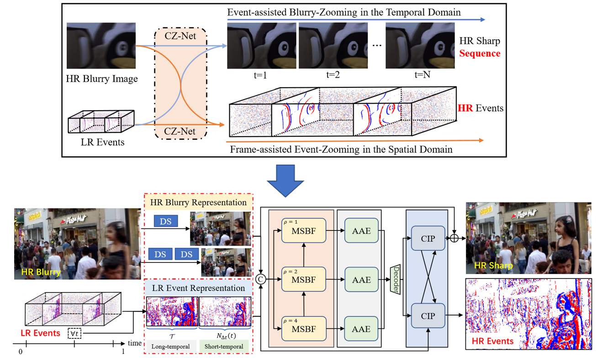

CrossZoom: A Unified Architecture for Motion Deblurring and Event Super-Resolving
Chi Zhang1,
Xiang Zhang2,
Lei Yu1,*
1. School of Electronic Information, Wuhan University, Wuhan 430079, China
2. Computer Vision Lab of ETH Zurich, Switzerland
Introduction
Even though collaborating with neuromorphic event cameras brings prosperity to traditional frame-based vision applications, the performance is still confined by
the resolution gap crossing two modalities in both spatial and temporal domains. This paper is devoted to bridging the gap by increasing the temporal resolution for images,
i.e., motion deblurring, and the spatial resolution for events, i.e., event super-resolving, respectively. To this end, we propose CrossZoom, a novel unified
neural Network (CZ-Net) to jointly recover sharp latent images at arbitrary timestamps within the exposure period of blurry input and the corresponding high-resolution
events. Specifically, the implicit time-encoding and multiscale blur-event fusion architectures are presented to achieve arbitrary timestamp recovery and scale-variant enhancement.
Attention-based adaptive enhancement and cross-interaction prediction modules are designed to alleviate the distortions embedded in LR events and reinforce the final results
through the prior blur-event complementary information. Furthermore, we propose a new dataset containing high-resolution, sharp image sequences and the corresponding real LR event
streams to bridge the gap between the synthetic and real-world datasets. Extensive qualitative and quantitative experiments on synthetic and real-world datasets demonstrate the
effectiveness and robustness of the proposed method.
